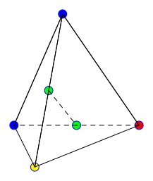
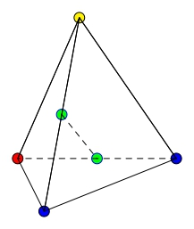

9.5. Tác động nhóm#
Tác động nhóm (Group Action) cho phép chúng ta đếm những cấu hình tổ hợp mà việc vét cạn rồi loại bỏ sẽ tốn nhiều công sức cũng như sai sót.
9.5.1. Tác động nhóm#
Cho tập hợp \(M\) và nhóm \(G\). Ta nói \(G\) tác động trái lên \(M\) với ánh xạ:
thỏa mãn hai tiên đề sau:
identity: \(\alpha (e, m) = m\) với mọi \(m \in M\) và \(e\) là phần tử đơn vị của \(G\);
compatibility: \(\alpha (g, \alpha (h, m)) = \alpha (g h, x)\).
Ta thường ký hiệu \(\alpha (g, m)\) bởi \(g(m)\) hay thậm chí đơn giản hơn là \(gm\). Ký hiệu \(gm\) sẽ được sử dụng từ đây về sau.
Khi đó hai tiên đề trên tương đương với:
identity: \(e m = m\) với mọi \(m \in M\);
compatibility: \(g(hm) = (gh)m\) với mọi \(m \in M\) và \(g, h \in G\).
Definition 9.24 (Stabilizer, nhóm con ổn định)
Với phần tử \(m \in M\) cho trước, tập hợp các phần tử \(g \in G\) mà \(gm = m\) được gọi là stabilizer của nhóm \(G\). Ta ký hiệu
Definition 9.25 (Orbit, quỹ đạo)
Orbit của phần tử \(m \in M\) là tập hợp
Remark 9.10
Hai orbit của hai phần tử bất kì hoặc rời nhau, hoặc trùng nhau.
Chứng minh
Giả sử ta có \(m_1, m_2 \in M\) mà \(G(m_1) \cap G(m_2) \neq \emptyset\).
Khi đó tồn tại \(g_1, g_2 \in G\) để \(g_1 m_1 = g_2 m_2\). Suy ra \(m_1 = g_1^{-1} g_2 m_2\).
Mà mọi phần tử trong \(G(m_1)\) có dạng \(g m_1\) nên \(g m_1 = g g_1^{-1} g_2 m_2\) nên \(G(m_1) \subseteq G(m_2)\).
Chứng minh tương tự ta cũng có \(G(m_2) \subseteq G(m_1)\) nên \(G(m_1) \equiv G(m_2)\).
Remark 9.11
Tập hợp \(M\) là giao của các orbit rời nhau. Giả sử ta có \(t\) orbit rời nhau \(G(m_1), G(m_2), \ldots, G(m_t)\) thì
Example 9.12
Cho nhóm \(\mathcal{S}_3\) có 6 phần tử \((1)(2)(3)\), \((1)(2,3)\), \((2)(1,3)\), \((3)(1,2)\), \((1,2,3)\), \((1,3,2)\).
Xét tập hợp \(M = \{1, 2, 3\}\). Khi đó, xét từng hoán vị trên, ta có:
và
Ta nhận thấy \(G(1) = G(2) = G(3)\), và \(\lvert G \rvert = 6 = \lvert G_1 \rvert \cdot \lvert G(1) \rvert\)
Hay nói cách khác, \(\lvert G(m) \rvert = [G: G_m]\) với \(G_m\) là stabilizer của phần tử \(m\) và \([G: G_m]\) là subgroup index của \(G_m \subset G\), và bằng \(\dfrac{\lvert G \rvert}{\lvert G_m \rvert}\) nếu là nhóm hữu hạn.
Định nghĩa.
Hai phần tử \(m, n \in M\) được gọi là có quan hệ với nhau dưới tác động của nhóm \(G\) nếu tồn tại phần tử \(g \in G\) sao cho \(m = g n\).
Ta ký hiệu là \(m \tilde{G} n\).
Remark 9.12
Quan hệ được định nghĩa như trên là quan hệ tương đương.
Chứng minh
Để chứng minh một quan hệ là tương đương, ta cần chứng minh tính phản xạ, đối xứng và bắc cầu.
Đối với tính phản xạ, mọi vector đều có quan hệ với chính nó qua phần tử đơn vị \(e \in G\).
Đối với tính đối xứng, nếu \(m\) có quan hệ với \(n\) thì tồn tại \(g \in G\) sao cho \(m = gn\). Theo tính chất nhóm thì tồn tại phần tử \(g^{-1}\) là nghịch đảo của \(g\) trong \(G\). Do đó \(g^{-1} m = n\). Nói cách khác \(n\) cũng có quan hệ với \(m\). Như vậy ta có tính đối xứng.
Đối với tính bắc cầu, nếu \(m\) có quan hệ với \(n\) thì tồn tại \(g_1 \in G\) sao cho \(m = g_1 n\). Tiếp theo, nếu \(n\) có quan hệ với \(p\) thì tồn tại \(g_2 \in G\) sao cho \(n = g_2 p\). Suy ra \(m = g_1 n = g_1 (g_2 p) = (g_1 g_2) p\). Do \(g_1, g_2 \in G\) nên \(g_1 g_2 \in G\). Như vậy \(m\) cũng có quan hệ với \(p\) nên quan hệ có tính bắc cầu.
Vậy quan hệ được định nghĩa như trên là quan hệ tương đương.
9.5.2. Bổ đề Burnside#
Các trạng thái khác nhau của tập hợp \(M\) là tương đương nhau nếu chúng nằm trong cùng lớp tương đương dưới tác động của nhóm \(G\).
Các ví dụ về bổ đề Burnside và định lý Polya được tham khảo tại [3].
Bổ đề. (Bổ đề Burnside)
Với nhóm \(G\) tác động lên tập hợp \(M\), ta có:
Trong đó:
\(t_G\) là số lớp tương đương của tập \(M\) dưới tác động của nhóm \(G\);
\(\lvert M^g \rvert\) là số điểm bất động của tập \(M\) dưới tác động của phần tử \(g\), nghĩa là \(M^g = \{ m \in M : gm = m\}\).
9.5.3. Bài toán tô màu bốn đỉnh tứ diện#
Cho hình tứ diện đều. Ta tô bốn đỉnh của nó bằng ba màu xanh, đỏ, vàng. Hỏi có bao nhiêu cách tô như vậy?
Ta cần lưu ý một điều, hai cách tô là tương đương nhau (giống nhau) nếu tồn tại một phép quay các đỉnh biến cách tô này thành cách tô kia.


Như hình trên ta thấy nếu chọn trục quay là đường thẳng nối trung điểm hai cạnh đối diện (hai điểm xanh lá) thì đỉnh trên và đỉnh dưới đổi chỗ cho nhau (xanh và vàng), đỉnh trái và đỉnh phải đổi chỗ cho nhau (xanh và đỏ).
Ta giải bài này như sau:
Đầu tiên ta đánh số các đỉnh của tứ diện (như hình)
Fig. 9.2 Đánh số hình#
Ta có ba trường hợp biến đổi sau:
Trường hợp 1. Giữ nguyên một đỉnh và trục quay là đường thẳng đi qua đỉnh đó và tâm của mặt đối diện.
Fig. 9.3 Trường hợp 1#
Khi đó phép quay (ngược chiều đồng hồ) tương ứng hoán vị \((1)(2,3,4)\) (quay 60 độ) và \((1)(2,4,3)\) (quay 120 độ).
Do ta chọn một đỉnh cố định thì ta có 4 cách chọn, và với mỗi cách chọn đỉnh cố định ta có thể quay hai cách nên ta có tổng là 8 hoán vị.
Trường hợp 2. Ta chọn trung điểm hai cạnh đối nhau và nối lại thành trục quay như hình trong ví dụ. Khi đó tương ứng với hoán vị \((1,4)(2,3)\).
Ta có \(\dfrac{C^2_4}{2!} = 3\) hoán vị.
Trường hợp 3. Hoán vị đồng nhất \((1)(2)(3)(4)\).
Tóm lại, tập hợp \(M\) ở đây là tập hợp 4 đỉnh của tứ diện, và nhóm tác động lên \(M\) là nhóm con 12 phần tử của \(\mathcal{S}_4\).
Như vậy, ví dụ với hoán vị \((1)(2,3,4)\), nếu ta muốn sau phép quay giữ nguyên trạng thái (hay nói cách khác là tìm \(M^g\)) thì ta tô màu đỉnh 1 tùy ý, đỉnh 2-3-4 chung màu (cũng tùy ý).
Suy ra ta có \(3 \cdot 3\) cách tô. Tương tự với các hoán vị dạng \((1,4)(2,3)\).
Như vậy \(t_G = \dfrac{1}{12}(1 \cdot 3^4 + 8 \cdot 3^2 + 3 \cdot 3^2) = 15\) cách tô màu khác nhau.
Tổng quát, nếu có \(k\) màu thì số lớp tương đương là
9.5.4. Tác động nhóm lên vector#
Xét nhóm \(G\) và không gian vector \(\mathbb{F}_2^n\), \(n \in \mathbb{N}\). Khi đó hai vector \(\bm{x}\) và \(\bm{y}\) thuộc \(\mathbb{F}_2^n\) được gọi là quan hệ với nhau nếu tồn tại \(g \in G\) mà \(\bm{x} = g \bm{y}\).
Ví dụ, xét nhóm hoán vị \(\mathcal{S}_3\). Giả sử các vector trong \(\mathbb{F}_2^3\) có dạng
Khi đó vector \((1, 0, 0)\) có quan hệ với \((0, 0, 1)\) với hoán vị \((1, 3)(2)\). Cụ thể là \((x_1, x_2, x_3) \xrightarrow{(1, 3)(2)} (x_3, x_2, x_1)\).
Tương tự, vector \((1, 0, 0)\) cũng có quan hệ với \((0, 1, 0)\) với hoán vị \((1, 2)(3)\). Thêm nữa, vector \((1, 0, 0)\) có quan hệ với chính nó qua hoán vị đồng nhất \((1)(2)(3)\).
Câu hỏi đặt ra là, có bao nhiêu lớp tương đương dưới tác động của nhóm \(\mathcal{S}_3\)?
Để giải quyết vấn đề này ta sử dụng bổ đề Burnside.
Nhóm \(\mathcal{S}_3\) có các hoán vị
Lần lượt xét từng hoán vị. Đầu tiên, với \((1)(2)(3)\) thì các phần tử trong vector đứng yên. Do đó dưới tác động của hoán vị này, \(x_1\) biến thành \(x_1\), \(x_2\) biến thành \(x_2\) và \(x_3\) biến thành \(x_3\). Số cách chọn cho mỗi \(x_i\) là 2 nên theo quy tắc nhân ta có \(2^3 = 8\) cách.
Tiếp theo, với hoán vị \((1, 2)(3)\) thì \(x_1 \to x_2\), \(x_2 \to x_1\) và \(x_3 \to x_3\). Do đó \(x_1\) và \(x_2\) có cùng giá trị nên có 2 cách chọn, \(x_3\) cũng có 2 cách chọn nên tổng số cách là \(2 \cdot 2 = 4\). Hoán vị \((1, 3)(2)\) và \((2, 3)(1)\) tương tự.
Với hoán vị \((1, 2, 3)\) thì \(x_1 \to x_2\), \(x_2 \to x_3\) và \(x_3 \to x_1\) nên \(x_1 = x_2 = x_3\), có 2 cách chọn trong trường hợp này. Hoán vị \((1, 3, 2)\) tương tự.
Như vậy, theo bổ đề Burnside, số lớp tương đương các vector trong \(\mathbb{F}_2^3\) là
Thật vậy, ta có thể chia các vector thành 4 lớp tương đương là \(\{ 000 \}\), \(\{ 001, 010, 011 \}\), \(\{ 011, 101, 110 \}\), \(\{ 111 \}\).
Ngoài nhóm \(\mathcal{S}_3\) ra còn các nhóm khác cũng tác động lên các vector. Một số nhóm hay được sử dụng là:
Nhóm general linear: gồm các ma trận khả nghịch \(n \times n\) trên \(\mathbb{F}_2\). Tác động nhóm lúc này là phép nhân ma trận \(\bm{A} \in \mathrm{GL} (n, 2)\) với vector \(\bm{x} \in \mathbb{F}_2^n\), hay \(\bm{A} \cdot \bm{x}\).
Nhóm general affine: gồm các ma trận khả nghịch \(n \times n\) trên \(\mathbb{F}_2\) và vector bất kì trong \(\mathbb{F}_2^n\). Tác động nhóm lúc này là biến đổi affine \(\bm{A} \cdot \bm{x} + \bm{b}\) với \(\bm{A} \in \mathrm{GL} (n, 2)\) và \(\bm{b} \in \mathbb{F}_2^n\).
Note. Số lượng phần tử của nhóm \(\mathrm{GL} (n, 2)\) là
9.5.5. Tác động nhóm lên hàm boolean#
Ta tiếp tục xét nhóm \(G\) và không gian vector \(\mathbb{F}_2^n\), \(n \in \mathbb{N}\). Khi đó hai hàm boolean \(n\) biến \(f(x_1, \ldots, x_n)\) và \(g(x_1, \ldots, x_n)\) được gọi là quan hệ với nhau nếu tồn tại \(\tilde{g} \in G\) mà \(g(\bm{x}) = f(\tilde{g} \bm{x})\) với mọi \(\bm{x} \in \mathbb{F}_2^n\).
Ta cũng xét hoán vị \(\mathcal{S}_3\) làm ví dụ. Ta cũng lần lượt xét các phần tử của nhóm.
Đặt \(f_0, f_1, \ldots, f_7\) lần lượt là các giá trị hàm \(f\) với các vector \(\bm{x} \in \mathbb{F}_2^3\).
Đầu tiên, với \((1)(2)(3)\), ta có bảng chuyển vector như hình sau (Fig. 9.4).
Fig. 9.4 Hoán vị \((1)(2)(3)\)#
Ta thấy rằng \(f_0 \to f_0\), \(f_1 \to f_1\), …, \(f_7 \to f_7\) nên có 8 chu trình. Vậy số lượng cách chọn là \(2^8\).
Tiếp theo, xét các hoán vị dạng \((1)(2, 3)\), ta có bảng chuyển vector như hình sau (Fig. 9.5).
Fig. 9.5 Hoán vị \((1)(2, 3)\)#
Ta thấy rằng \(f_0 \to f_0\), \(f_1 \to f_2 \to f_1\), \(f_3 \to f_3\), \(f_4 \to f_4\), \(f_5 \to f_6 \to f_5\), \(f_7 \to f_7\). Ở đây có 6 chu trình nên số cách chọn là \(2^6\).
Tiếp theo ta xét các hoán vị dạng \((1, 2, 3)\) (Fig. 9.6).
Fig. 9.6 Hoán vị \((1, 2, 3)\)#
Ta thấy rằng \(f_0 \to f_0\), \(f_1 \to f_2 \to f_4 \to f_1\), \(f_3 \to f_6 \to f_5 \to f_3\), \(f_7 \to f_7\) nên ở đây có 4 chu trình. Số cách chọn là \(2^4\).
Như vậy theo bổ đề Burnside, số lớp hàm bool tương đương dưới tác động của nhóm \(\mathcal{S}_3\) là
9.5.6. Định lý Polya#
Với mỗi hoán vị trong tập \(G\), ta viết dưới dạng các chu trình độc lập
Nếu ta viết hoán vị dưới dạng các chu trình rời nhau, ta gọi
Kí hiệu |
Ý nghĩa |
|---|---|
\(t_1\) |
số chu trình có độ dài 1 |
\(t_2\) |
số chu trình có độ dài 2 |
\(\ldots\) |
tương tự |
\(t_n\) |
số chu trình có độ dài \(n\) |
Khi đó, cycle index (hay chỉ số chu trình) của hoán vị ứng các biến \(z_1, z_2, \ldots, z_n\) là
Example 9.13
Xét hoán vị \((1,2,3)(4)(5)(6,7) \in \mathcal{S}_7\)
Ta có hai chu trình độ dài 1, một chu trình độ dài 2 và một chu trình độ dài 3 và không có chu trình độ dài 4, 5, 6, 7.
Do đó chỉ số chu trình là \(I_g (z_1, z_2, z_3) = z_1^2 z_2^1 z_3^1\).
Remark 9.13
Bất kì hoán vị nào thuộc \(\mathcal{S}_n\) đều thỏa \(1 \cdot t_1 + 2 \cdot t_2 + \ldots + n \cdot t_n = n\).
Definition 9.26 (Cyclic index, chỉ số chu trình)
Chỉ số chu trình của nhóm G là:
Nhìn lại ví dụ về tứ diện bên trên, các đỉnh nằm trong cùng chu trình cần được tô cùng màu. Từ đó ta có chỉ số chu trình
Cho mỗi \(z_i = 3\) ta có kết quả phép tính theo bổ đề Burnside.
Định lý Polya là một mở rộng cho bổ đề Burnside, cho phép chúng ta đếm số lớp tương đương thỏa mãn điều kiện nhất định (về số lượng phần tử).
Ví dụ với hình tứ diện như trên nhưng ta thêm điều kiện tô hai đỉnh màu vàng, một đỉnh màu đỏ và một đỉnh màu xanh.
Ta ký hiệu tập \(R\) là tập hợp các trạng thái có thể nhận của mỗi phần tử \(m \in M\).
Ở ví dụ trên thì \(R = \{\text{đỏ}, \text{xanh}, \text{vàng}\}\).
Ta thay mỗi \(z_i\) trong chỉ số chu trình bằng tổng \(\displaystyle{\sum_{r \in R} r^i}\).
Example 9.14
Giả sử ta tô màu bốn đỉnh tứ diện với hai màu \(R = \{r_1, r_2\}\).
Với \(z_1\) ta thay bằng \(r_1 + r_2\).
Với \(z_2\) ta thay bằng \(r_1^2 + r_2^2\).
Với \(z_3\) ta thay bằng \(r_1^3 + r_2^3\).
Khi đó \(P_G\) tương đương với
Ta khai triển \(P_G\) (lưu ý là ở đây không có tính giao hoán phép nhân)
Mình thấy rằng có 16 cấu hình khác nhau tương ứng 16 cách tô hai màu cho bốn đỉnh. Tương tự
và cuối cùng
Việc không có tính giao hoán với phép nhân làm biểu thức cồng kềnh và phức tạp.
Do đó mình thêm một tập hợp \(W\) là vành giao hoán, và xét ánh xạ \(w: R \mapsto W\) với \(w(r_i) = w_i\).
Khi đó nếu thay \(r_i\) bởi \(w_i\) vào bên trên biểu thức sẽ rất đẹp
Khai triển và thu gọn ta có
Ở đây, định lý Polya nói rằng, số mũ của \(w_i\) thể hiện số lượng phần tử của tập \(M\) nhận giá trị \(r_i\), và hệ số trước mỗi toán hạng là số lớp tương đương tương ứng với số lượng phần tử của tập \(M\) nhận các giá trị \(r_i\).
Nói cách khác:
có 1 lớp tương đương mà 4 đỉnh nhận màu \(r_1\);
có 1 lớp tương đương mà 3 đỉnh nhận màu \(r_1\) và 1 đỉnh nhận màu \(r_2\);
có 1 lớp tương đương mà 2 đỉnh nhận màu \(r_1\) và 2 đỉnh nhận màu \(r_2\);
có 1 lớp tương đương mà 1 đỉnh nhận màu \(r_1\) và 3 đỉnh nhận màu \(r_2\);
có 1 lớp tương đương mà 4 đỉnh nhận màu \(r_2\).
Quay lại vấn đề tô bốn đỉnh tứ diện với ba màu xanh, đỏ, vàng. Tìm số cách tô hai đỉnh màu vàng, một đỉnh màu đỏ và một đỉnh màu xanh.
Đặt \(w(\text{vàng}) = x\), \(w(\text{đỏ}) = y\) và \(w(\text{xanh}) = z\).
Ta có:
Như vậy đề bài tương ứng việc tìm hệ số của hạng tử \(x^2 yz\) trong biểu thức trên. Kết quả là 1.